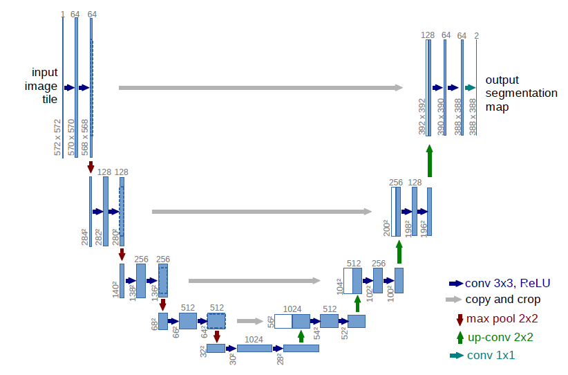

简介
成功训练一个深度网络需要大量已标注的训练样本。在这篇论文中，我们提出了一个新的网络和训练策略。为了更有效的利用标注数据，我们使用数据扩张的方法(data augmentation)。我们的网络由两部分组成：一个收缩路径(contracting path)来获取上下文信息以及一个对称的扩张路径(expanding path)用以精确定位。我们使用这个网络获得了赢得了ISBI cell tracking challenge 2015.不仅如此，这个网络非常的快，对一个512*512的图像，使用一块GPU只需要不到一秒的时间。
网络获取地址(基于caffe)：http://lmb.informatik.uni-freiburg.de/people/ronneber/u-net.
一、介绍
[1]通过预测每个像素点的类别来对医学图像进行分割。首先，这个网络可以完成定位工作。其次，由于预测时要切patch，所以训练数据量远大于训练图像的数量。这个网络以绝对优势赢得了ISBI
2012的EM分割挑战赛（EM segmentation challenge）。
这个网络有两个很明显的缺点：
1.要分别预测每一个patch的类别，patch之间的重叠导致每次预测都要重复计算同一个点。
2.这个网络需要在 局部准确性和获取整体上下文信息之间取舍。
在这篇文章中，我们建立了一个更加优雅的框架，通常被称为“全卷积网络”（fully convolutional
network）[2]。我们修改并拓展了这个框架，使其可以仅使用少量训练图片就可以工作，获得更高的分割准确率。网络如下图所示：

fcn(fully convolutional natwork)的思想是：修改一个普通的逐层收缩的网络，用上采样(up sampling)(？？反卷积)操作代替网络后部的池化(pooling)操作。因此，这些层增加了输出的分辨率。为了使用局部的信息，在网络收缩过程（路径）中产生的高分辨率特征(high
resolution features) ，被连接到了修改后网络的上采样的结果上。在此之后，一个卷积层基于这些信息综合得到更精确的结果。
与fcn(fully convolutional natwork)不同的是，我们的网络在上采样部分依然有大量的特征通道(feature channels)，这使得网络可以将环境信息向更高的分辨率层(higher resolution layers)传播。结果是，扩张路径基本对称于收缩路径。网络不存在任何全连接层(fully connected layers)，并且，只使用每个卷积的有效部分，例如，分割图(segmentation map)只包含这样一些像素点，这些像素点的完整上下文都出现在输入图像中。为了预测图像边界区域的像素点，我们采用镜像图像的方式补全缺失的环境像素。这个tiling方法在使用网络分割大图像时是非常有用的，因为如果不这么做，GPU显存会限制图像分辨率。
我们的训练数据太少，因此我们采用弹性形变的方式增加数据。这可以让模型学习得到形变不变性。这对医学图像分割是非常重要的，因为组织的形变是非常常见的情况，并且计算机可以很有效的模拟真实的形变。在[3]中指出了在无监督特征学习中，增加数据以获取不变性的重要性。
在细胞分割任务中的另一个挑战是，如何将同类别的相互接触的目标分开。我们提出了使用一种带权重的损失(weighted loss)。在损失函数中，分割相互接触的细胞获得了更大的权重。
二、网络结构
上图展示了网络结构，它由contracting path 和 expansive path组成。contracting path是典型的卷积网络架构。它的架构是一种重复结构，每次重复中都有2个卷积层和一个pooling层，卷积层中卷积核大小均为33，激活函数使用ReLU，两个卷积层之后是一个22的步长为2的max pooling层。每一次下采样后我们都把特征通道的数量加倍。contracting path中的每一步都首先使用反卷积(up-convolution)，每次使用反卷积都将特征通道数量减半，特征图大小加倍。反卷积过后，将反卷积的结果与contracting path中对应步骤的特征图拼接起来。contracting path中的特征图尺寸稍大，将其修剪过后进行拼接。对拼接后的map进行2次33的卷积。最后一层的卷积核大小为11，将64通道的特征图转化为特定深度（分类数量，二分类为2）的结果。网络总共23层。
三、训练
我们采用随机梯度下降法训练。
为了最大限度的使用GPU显存，比起输入一个大的batch size，我们更倾向于大量输入tiles。我们使用了很高的momentum（0.99）。
最后一层使用交叉熵函数与softmax。（交叉熵函数如下所示）

为了使某些像素点更加重要，我们在公式中引入了w(x)。我们对每一张标注图像预计算了一个权重图，来补偿训练集中每类像素的不同频率，使网络更注重学习相互接触的细胞之间的小的分割边界。我们使用形态学操作计算分割边界。权重图计算公式如下：

wc是用于平衡类别频率的权重图，d1代表到最近细胞的边界的距离，d2代表到第二近的细胞的边界的距离。基于经验我们设定w0=10，σ≈5像素。
网络中权重的初始化：我们的网络的权重由高斯分布初始化，分布的标准差为(N/2)^0.5,N为每个神经元的输入节点数量。例如，对于一个上一层是64通道的33卷积核来说，N=964。
四、数据增加
在只有少量样本的情况况下，要想尽可能的让网络获得不变性和鲁棒性，数据增加是必不可少的。因为本论文需要处理显微镜图片，我们需要平移与旋转不变性，并且对形变和灰度变化鲁棒。将训练样本进行随机弹性形变是训练分割网络的关键。我们使用随机位移矢量在粗糙的3*3网格上(random displacement vectors on a coarse 3 by 3 grid)产生平滑形变(smooth deformations)。
位移是从10像素标准偏差的高斯分布中采样的。然后使用双三次插值计算每个像素的位移。在contracting path的末尾采用drop-out层更进一步增加数据。